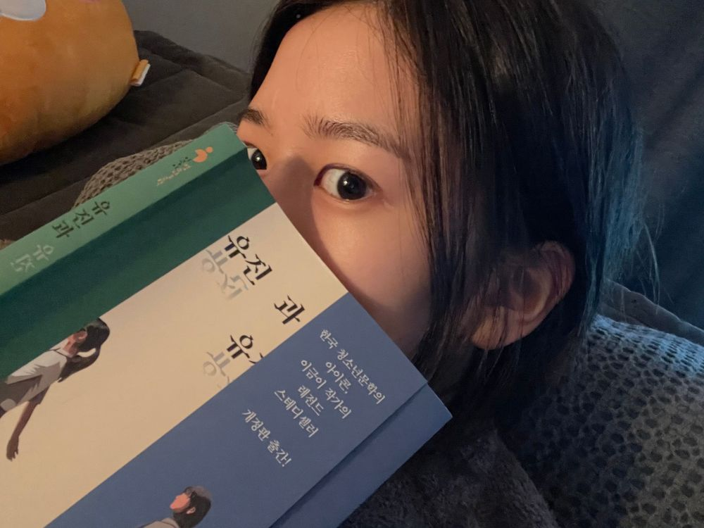

유진과 유진과 유지니
이 책은 오늘 반 정도 읽은 듯 ..!!
유명한 책이라 사실 많이 들어봤는데
읽어보는 건 또 처음이네용
책은 내가 상상하면서 읽어서 그런가 되게
몰입이 잘되네 .. 오늘도 살짝 눈물 고였음
🥺 한 요정도..? ㅋㅋㅋㅋㅋㅋㅋㅋㅋㅋㅋㅋ
원래 오늘 날씨가 좋길래 카페가서 책읽고 싶었는데
그냥 창문 좀 열어놓고 읽은 걸로 만족하겠어 ..
낮에는 따뜻하더니 저녁에는 또 춥대요
그래두 봄이 얼마남지않았으니 기다려야지 ㅎㅎ
봄에는 한강 가서 자전거도 타고
음.. 낮에 카페 가서 책 읽고싶고
또 .. 필카 대여해서 사진 찍을 수 있다는 곳을 새로 알아서
거기도 가보고싶고 !!!!!!